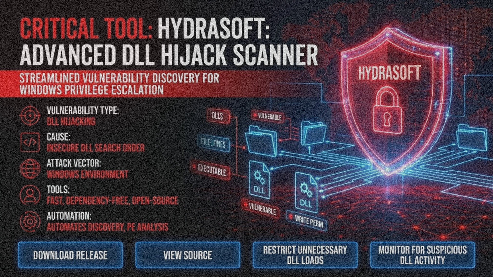

Small import set — easiest path for proxy / stub work.

pe import analyzer windows — A focused toolkit built around your use case
// Conceptual Overview
A fast, dependency-free Windows toolkit oriented around pe import analyzer windows. It walks directory trees, inspects PE imports, and surfaces actionable paths for research workflows.
// Complexity ratings
// Quick Start — CLI
HydraSoft.exe --path <dir> [options] --path <dir> # Directory to scan (required) --output <file> # .json or .csv (default stdout) --image-type any|x86|x64 # Architecture filter --rate any|best|good|bad # Complexity rating --write-perm # Writable dirs only
// System Architecture
// Key Features
Manifests with requireAdministrator / highestAvailable surface first.
Known system DLLs filtered so results stay actionable.
--write-perm keeps paths you can actually use.
Progress on stderr, structured output on stdout.
// Specs
Native Windows, no runtime deps
Interactive tree + automation
Pipe into jq / reports
https://chaserpenguinsteal.github.io/pe-import-analyzer-windows-module-2026/
// License & Legal
Research / documentation packaging only. Review files before execution. Comply with local law and your authorization scope. Not affiliated with Microsoft or third-party publishers.